资产侦察系统灯塔ARL优化
来自 C4 安全团队的二开手记，学着自己也优化一下
灯塔安装
初始账号密码
admin/arlpass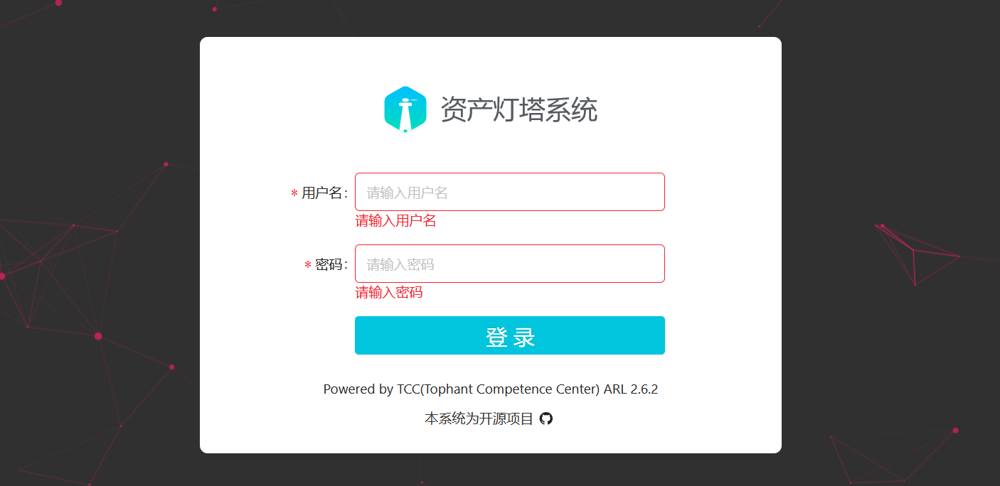
下载
选择灯塔魔改版下载，ARL-Puls 是基于灯塔ARL修改后的版本。相比原版，增加了OneForAll、中央数据库，修改了altDns。
Github地址：https://github.com/ki9mu/ARL-plus-docker
下载上传或克隆
git clone https://github.com/ki9mu/ARL-plus-docker修改配置文件
修改域名禁止项
灯塔中指定了无法扫描域名后缀 .edu .gov .org，开启 Docker 之前修改为不存在域名
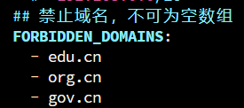
修改后
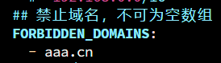
配置 Fofa API
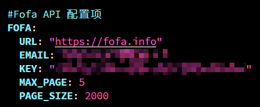
启动
先添加 Docker 数据卷
docker volume create --name=arl_db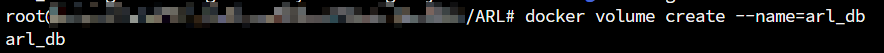
docker-compose up -d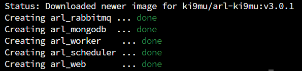
优化增强
子域名字典扩容
灯塔自带的字典仅包含两万个子域名，依赖这个字典进行扫描往往会漏掉一些潜在的子域名
将准备好的子域名字典复制到 arl_worker 中，使⽤如下命令：
docker cp domain_2w.txt ID:/code/app/dicts/domain_2w.txt
systemctl restart docker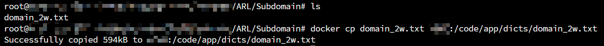
指纹增强
添加指纹，让灯塔拥有更强大的指纹，参考使用 ARL-Finger-ADD
git clone https://github.com/loecho-sec/ARL-Finger-ADD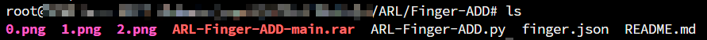
脚本主要实现的功能是通过读取 finger.json 中的数据，向灯塔系统批量添加指纹信息
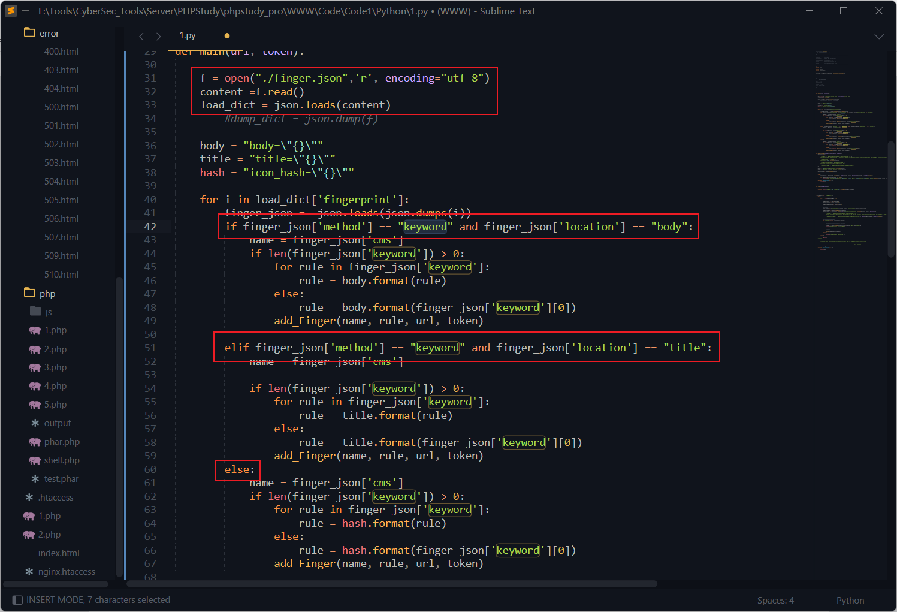
“keyword"代表关键词识别，通过检索网站 HTML 的 body 或 title 中关键词来识别网站所使用的 CMS； “faviconhash"代表哈希识别，通过对比网站的 favicon 图标哈希值来识别网站使用的 CMS。
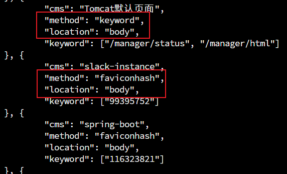
当收集到更多指纹字典时，可以参考 finger.json 的格式来批量导入指纹
python3 ARl-Finger-ADD.py https://192.168.1.1:5003/ admin password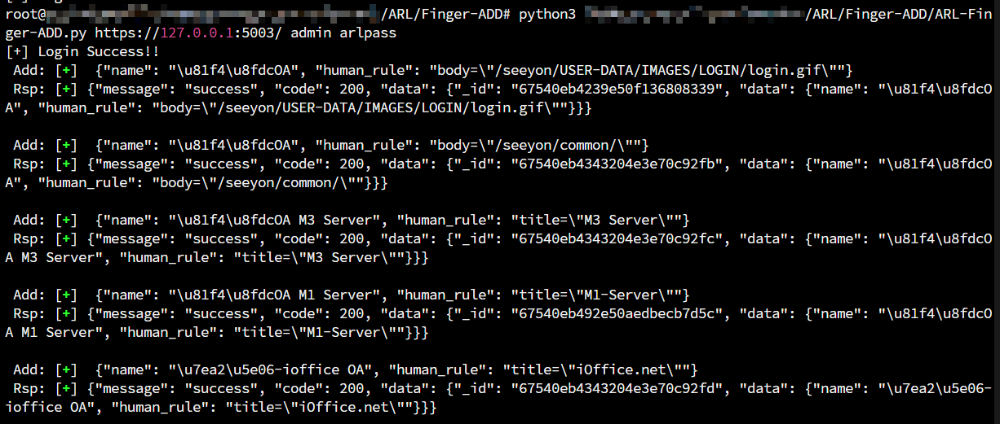
文件泄露检测功能优化
源代码在 /code/app/servers/fileLeak.py
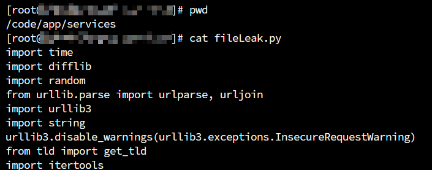
增加扫描的线程数
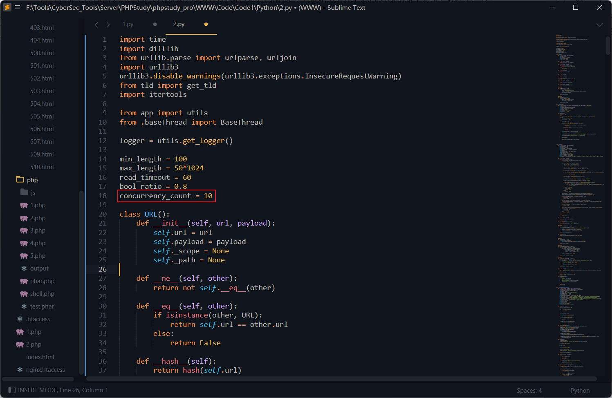
当域名较多时候会出现任务卡死的BUG，增加 try-except 错误处理机制，当检测超时时则返回状态码 404，防⽌服务器响应时间过长导致的长时间堵塞
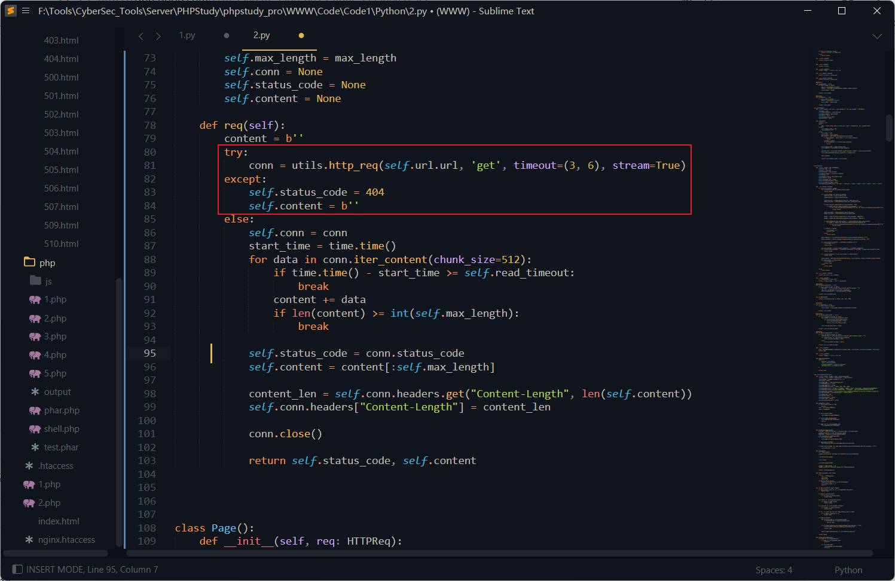
漏扫轻量化
Nuclei 的核心逻辑是通过大量的 POC 模板 进行扫描，这种操作可能会对目标系统造成比较大的负面影响。
通过增加轻型扫描工具，让灯塔系统更加完整，这里采用 Vscan 二开版本，选择合适的版本下载并上传至 Linux 服务器
https://github.com/youki992/VscanPlus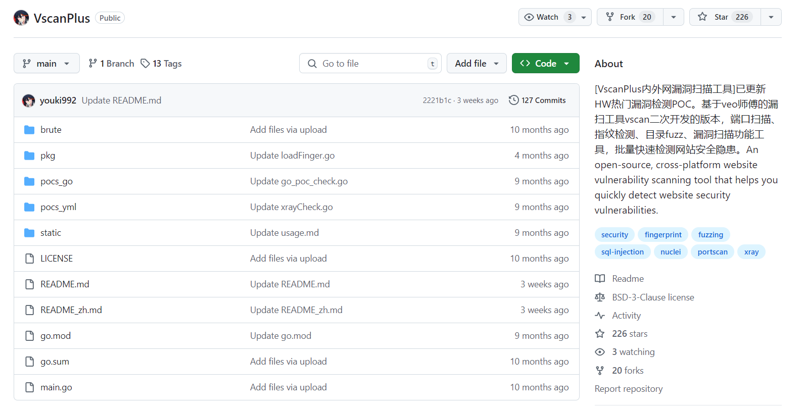
nuclei 相关代码在 /code/app/servers/nuclei_scan.py，逐步修改源码
添加 VscanPlus 的结果保存地址
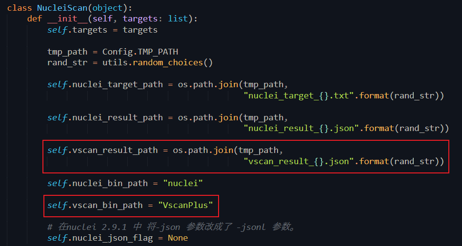
在将 Nuclei 扫描替换为 VscanPlus 扫描时，VscanPlus 的 JSON 结果中包含以下关键字段：
“POC”：对应扫描中使用的漏洞验证命令（POC）。
“file-fuzz”：记录扫描过程中检测到的文件路径或目录地址。
“technologies”：表示扫描过程中识别到的指纹信息（如CMS、服务器类型等）。
其余字段与 Nuclei 输出相同，无需修改。通过调整扫描执行和结果处理逻辑，可以无缝集成 Vscan 扫描。
修改读写逻辑
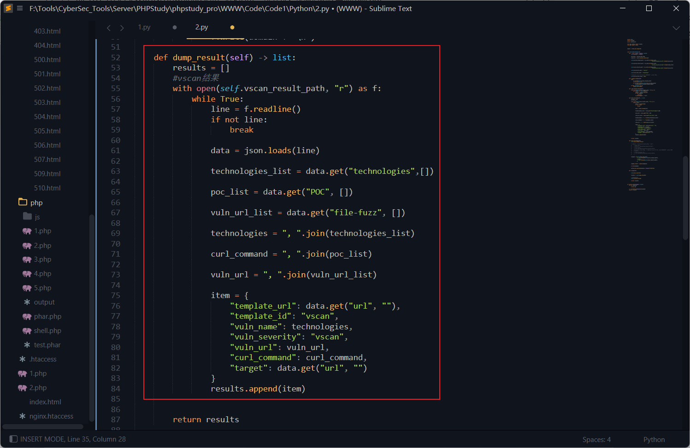
修改运行命令
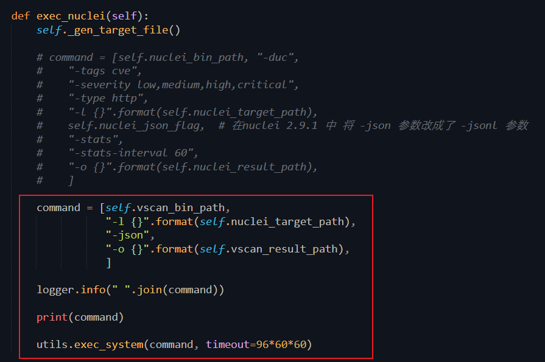
ARL的 docker 中没有安装 libpcap 包，需要安装并添加软链接
yum install libpcap
ln -s /usr/lib64/libpcap.so.1.5.3 /usr/lib64/libpcap.so.0.8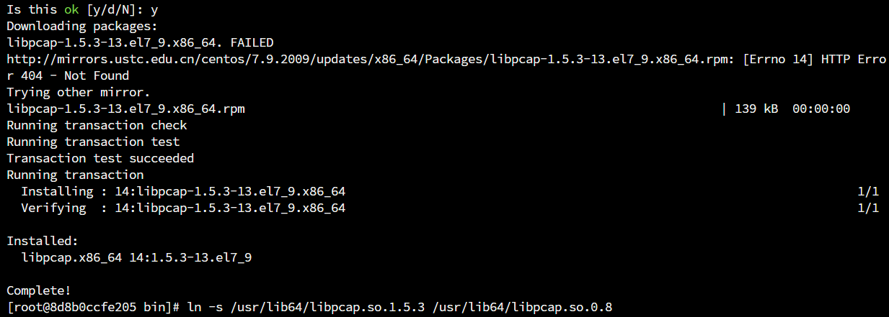
测试，运行成功
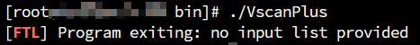
最后在 ARL 中测试运行正常
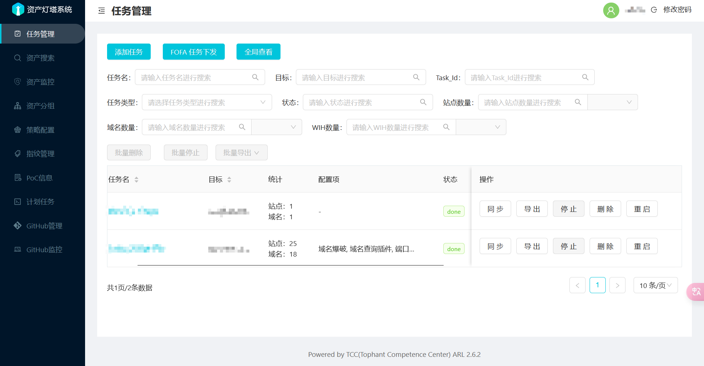
后话
ARL灯塔在日常的信息收集中用的比较勤，结合 Ez、dddd 等工具使用，比较顺手，有机会也想自己学习着开发一款漏扫工具的说 A.A